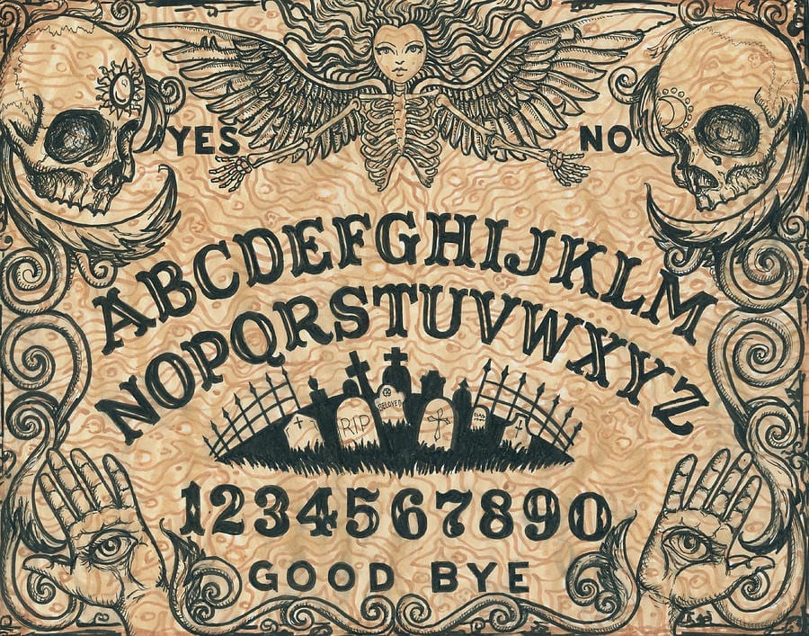

Sister to Sisyphos --Specified Specificicity
Talk to Ghosts

The Hour Glass
There goes my vindication
One more grain falls as I approach the hour
The hour of worthlessness
There slips through my clumsy fingers
All noncommittal
It is futile to try to stop time
The clock moves; my resignation
I am finished
at the end of the hour
Another grain follows through my fingers
There goes my dedication as I am rendered
Doomed and hollow
The sand progresses as I diminish
The hourglass will drain
All of me away